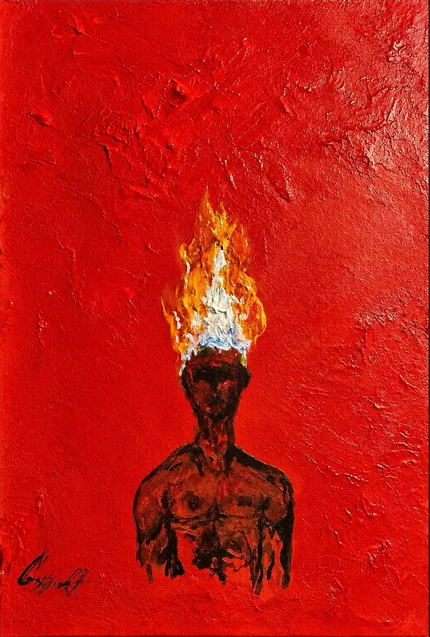

Exposición de pintura
Cristhian
Osorio Acosta
Pintor autodidacta. Una selección de obras nacidas del sentimiento, la imaginación y aquello que no siempre puede decirse con palabras.
Entrar a la exposición
Obra
Dieciséis pinturas realizadas entre 2015 y 2026, ordenadas de la más reciente a la más antigua. Toca una obra para verla en grande y leer su ficha.
Las imágenes pueden tardar un poco en cargar debido a la calidad y resolución de las obras.
“Pinto aquello que no siempre puede decirse, pero que insiste en ser sentido.”
Sobre el artista
Me considero un pintor de nacimiento. Cuando tenía apenas 6 años, mi padre me ponía a pintar la luna. Con el paso del tiempo he llegado a pensar que quizá aquel gesto de mi infancia fue un pequeño prólogo, un posible designio de Dios que me acercó desde muy temprano al lenguaje de la pintura.
Hoy tengo 26 años y muchas de las obras que he creado a lo largo de mi vida se han perdido. Las pocas que aún conservo conmigo son parte de esta exposición: fragmentos de distintas etapas, emociones y momentos que lograron permanecer.
Me atraen especialmente el surrealismo y el arte abstracto. En ellos encuentro libertad para transformar pensamientos, emociones y experiencias en formas, colores y símbolos. Para mí, pintar no es solamente crear una imagen: es sentirla primero. Pintar con sentimiento es mi pasión.